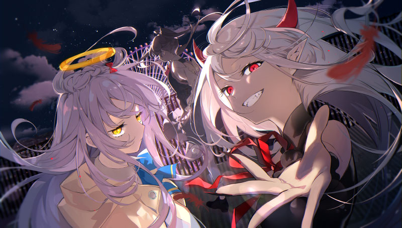

TUYU is a musical group famous for the meanings behind their songs and sometimes even from their MVs. They convey things that a lot of people can relate to: heartbreak, being just a shadow of someone else, regret, being a compared child, nostalgia. More than that, I find their music comforting, just listening to them just calms my nerves and motivates me to keep going because I feel that I’m not alone in this, and that someone actually feels the same.

Recommendation List
Trapped in the Past
Most of us admired the idea of being adults when we were kids, but when exposed to the reality of what being adult actually means, we suddenly long for the easy, and fun childhood. Trapped in the Past tells the story of a girl who struggles to move towards the future and longs for her past life. She laments the passing of her “perfect” life in the past and in the end, she decided to stop moving forward and remain as part of the past.
If there was an Endpoint
This is actually the epilogue of the song “I'm getting on the bus to the other world, see ya!” from the same artist. It tells the story of a girl in the afterlife that died from suicide. She regrets her actions because even in the afterlife, her loneliness still exists and wishes that she can start all over again. She realized that dying isn’t the endpoint to her loneliness and the main character actually wants those who wish to get on the bus to the other world to turn back and stay strong.
I'm Saying Farewell to that Rock-and-Roll You
This song is about a girl being a shadow of someone else. She envies their talent but cannot seem to catch up despite trying her best. At one point she realized that chasing someone else’s dreams will not bring her anywhere and decided to chase her own dream in her own way. She decided to stop being someone’s shadow and chase her own light.